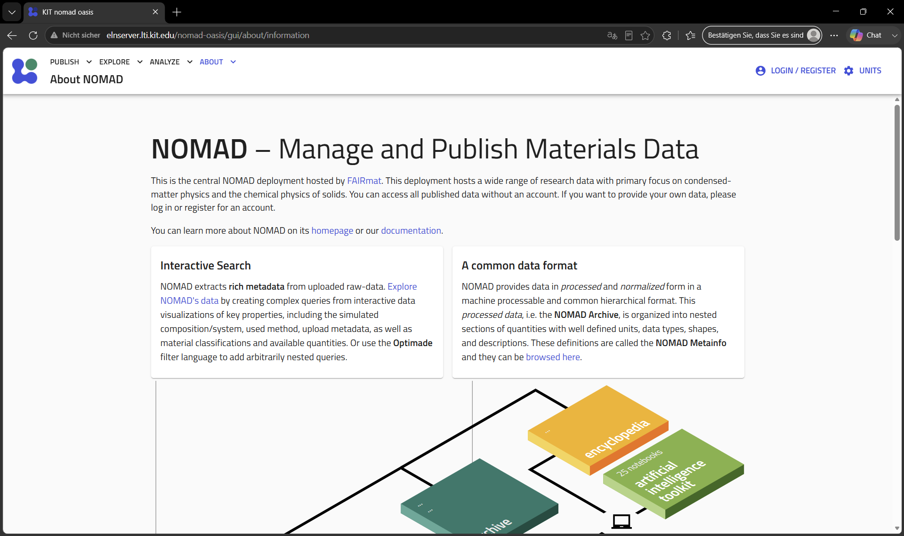

NOMAD Electronic Laboratory Notebook
The NOMAD ELN enables structured documentation, metadata management, long-term preservation of scientific research data and a Jupyter base wherre measurement data can be evaluated directly.

NOMAD Dashboard interface: Go to OASIS
Key Features
-
Experiments
Document laboratory work in a structured way with digital twins of laboratory equipment.
-
Uploads
Upload your experimental plans and measured raw data and get them mapped automatically.
-
Metadata
Access and enrich metadata extracted from files. Built-in parsers automatically extract and structure experimental informations.
-
Data Analysis
Visualize, plot, and download your experimental data with the data analysis done on the NOMAD Oasis.
-
Share Data
Quickly share datasets within your research group to compare results and compare the quality of machines and users.
-
Publication
Prepare FAIR datasets for long-term storage and scientific publication.
Why do we use an ELN: Legal Framework & Background for ELNs at German Universities
Executive Summary
There is no direct statutory law in Germany mandating the use of specific software (such as an ELN). However, universities and researchers are bound by a dense network of state laws, funding agency requirements, and academic codes of conduct. These regulations legally require research data to be documented in an audit-proof, retrievable, and structured manner. Given the massive scale of modern digital raw data, fulfilling these legal requirements using traditional paper lab notebooks is practically impossible.
1. The Core of Academic Law: Good Scientific Practice (GWP)
The German Research Foundation (Deutsche Forschungsgemeinschaft - DFG) has established binding guidelines in its Code of Conduct: Guidelines for Safeguarding Good Scientific Practice. Almost all German universities have legally adopted this code into their internal university statutes and regulations.
- Guideline 17 (Archiving): Research data, raw data, and reports must be stored on secure infrastructure within the institution for at least 10 years.
- Traceability & Verifiability: Every scientific result must be fully reproducible. Unlike a paper notebook, an ELN provides an automated version history (
Audit Trail). This ensures that any deletions, modifications, or subsequent manipulations are technically impossible to hide and can be easily verified. - Sanctions: Violations of GWP guidelines constitute scientific misconduct. This can result in severe consequences, including the revocation of academic degrees, termination of employment, or a ban from future grant funding.
2. Statutory Regulations & State Higher Education Laws
The overarching legal framework is defined by federal and state laws governing the organization and public duties of universities.
- State Higher Education Acts (Landeshochshulgesetze - LHG): State university laws increasingly mandate that universities implement professional Research Data Management (RDM). As public-law corporations, universities are legally required to guarantee a transparent and traceable documentation of research funded by taxpayers.
- State Archive Laws (Landesarchivgesetze): Legally, research data generated at universities is often classified as state archival material. There is a statutory duty to properly manage, index, and protect these files from deterioration or loss.
3. Legal Obligations Under Third-Party Funding
Modern university research heavily relies on external funding. The allocation of these public and private funds is tied to strict contractual obligations:
| Funding Body | Data Governance Requirements | Role of the ELN |
|---|---|---|
| DFG (German Research Foundation) | Mandatory Data Management Plan (DMP) at the proposal stage. Proof of long-term data preservation. | Central repository for protocols, directly linked to electronic raw data and instruments. |
| EU (Horizon Europe) | Strict mandate for Open Science and compliance with the FAIR Principles (Findable, Accessible, Interoperable, Reusable). | Standardized interfaces and open export formats enable global interoperability. |
| BMBF / Federal Ministries | Verification audits of usage. Absolute proof of correct execution of the funded project. | Audit-proof documentation of project progress protects the university from funding clawbacks. |
4. Liability, Patent Law, and Intellectual Property
In industrial collaborations or during patent application processes, the legal certainty of documentation becomes critical:
- Proof of Invention (Arbeitnehmererfindergesetz - ArbnErfG): University employees are legally required to report inventions immediately. An ELN equipped with digital time-stamps (e.g., RFC 3161 compliant) provides an exact, court-admissible proof of priority (Who made the discovery at what exact millisecond?).
- Liability Protection: If a publication is challenged regarding potential plagiarism or data manipulation, the ELN serves as the ultimate legal protection for both the individual lab and the university.
5. Data Privacy & IT Security (GDPR & BSI)
Whenever university research involves human subjects (particularly in medicine, clinical trials, or psychology), the General Data Protection Regulation (GDPR) applies. ELNs support compliance through: * Strict, role-based access control (granular read/write permissions). * Secure encryption for data both in transit and at rest. * Systematic deletion concepts (the Right to be Forgotten), provided they do not conflict with GWP archiving laws.